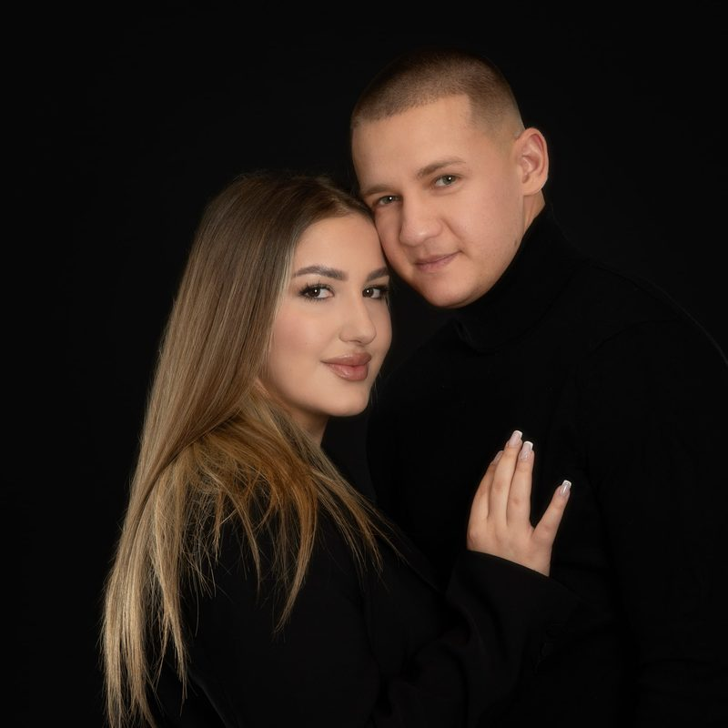
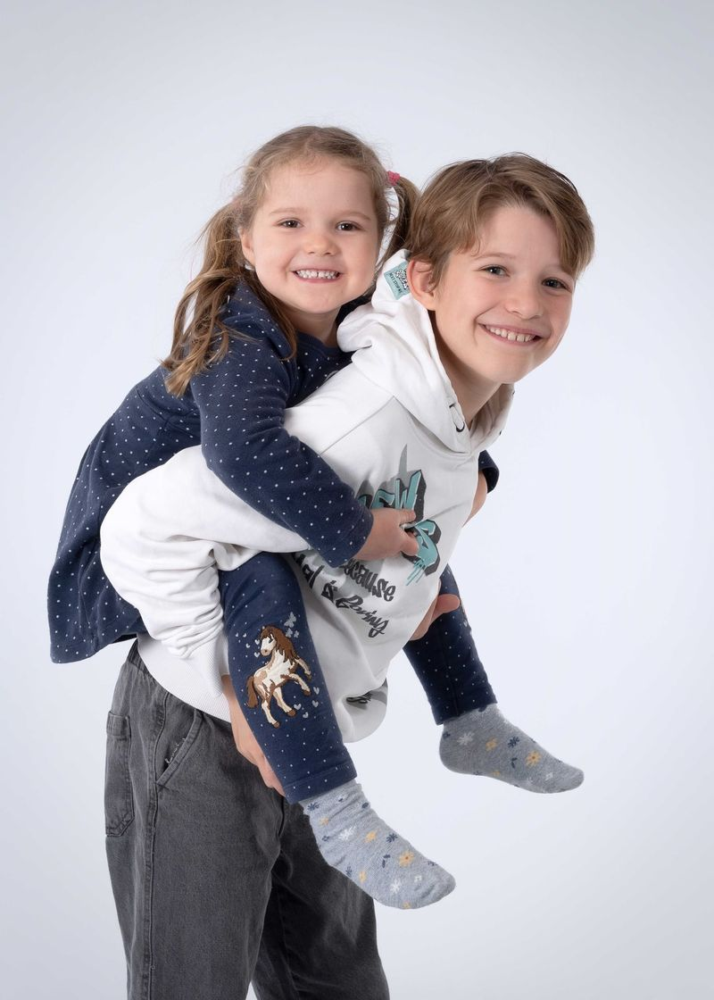
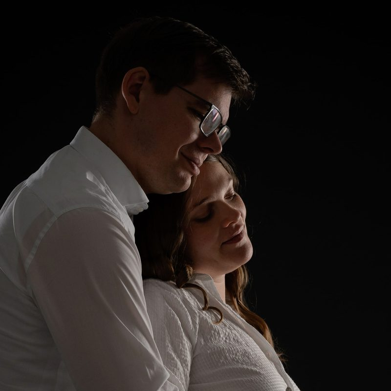
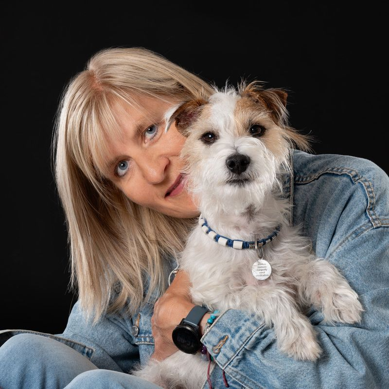

Fotostudio Fotoprofile in Neufahrn bei Freising
Sie, so wie Sie wirklich sind.
Familien, Paare, Kinder, Menschen mit Hund und Business-Portraits. Fotografiert von Katrin Bernhard im Studio in Neufahrn.
Oder rufen Sie an: 08165 / 80 97 97

- 4,9 von 5 bei 233 Google-Bewertungen (Stand: November 2026)
- Fotografenmeisterin
- Seit über 35 Jahren
Willkommen bei Fotoprofile
Ich fotografiere seit über 35 Jahren und habe ein feines Gespür für Menschen und ihre Vierbeiner entwickelt.
Katrin Bernhard, Fotografenmeisterin
In kürzester Zeit erkenne ich, was Sie gerade brauchen: Bei Kindern, ob sie Action oder Ruhe möchten, im Business-Bereich, ob Sie Anleitung, eine klare Position oder einfach Zeit zum Ankommen brauchen.
Jeder tickt vor der Kamera anders, und genau darauf stelle ich mich mit Empathie, Feingefühl und Herz ein. So fühlen Sie sich wohl, die Bilder zeigen Sie, wie Sie wirklich sind, und am Ende sagen Sie: „Das hat sogar richtig Spaß gemacht.“
Leistungen
Wählen Sie Ihr Shooting
-
Privat
Familienshooting
-

Privat
Baby- & Kinderfotos
-
Privat
Babybauch-Shooting
-

Privat
Portrait & Paare
-
Privat
Hochzeit
-

Privat
Hund & Mensch
-
Business
Businessfotos
-
Business
Bewerbungsfotos
Schnell zum Termin
Passfotos und Bewerbungsfotos buchen Sie direkt online.
Über mich
Katrin Bernhard
Fotografenmeisterin
Viele, die sich sonst nicht gern fotografieren lassen, sind am Ende überrascht, wie schön ihre Bilder geworden sind. Viele Familien begleite ich seit Jahren, vom Babybauch über die Einschulung bis zur Hochzeit.
Über michKundenbewertungen
Bewertungen auf Google
Anfahrt
Studio, Anfahrt, Einsatzgebiet
Einsatzgebiet
- Landkreis Freising
- Landkreis Erding
- Landkreis München
- Eching
- Hallbergmoos
- Freising
- Garching
- München
- Moosburg
- Mainburg
- Telefon
- 08165 / 80 97 97
- kontakt@fotoprofile.de